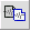
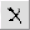
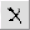
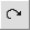
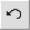

A picture of an ACORNS Sound Panel follows. Sound panels allow you to create, edit, and manipulate sound recordings.
| Recording Buttons |

|
| File Control Buttons |


|
| Edit Buttons |


 



|
| Recording Speed and Volume Control Buttons |


|
| Wave Display Buttons |


|
| Selection Control Buttons |


|
| Zoom Control Buttons |

|
| Redo and Undo Buttons |   |